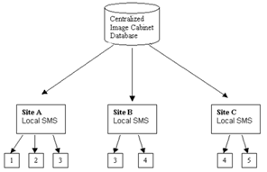

Image Server is designed for
handling the storage Storage and retrieval Retrieval of documents
in WAN environment. It stores documents using File System and maintains
information about these documents in the database. Image sServer thereby has two
essential components namely,viz.
§
Image
Cabinet – This is the database component of Image Server. It
maintains information of all documents stored in the Image Server. This information includes
location and size of document and other attributes relevant to mapping to
actual document on File System.
§
Storage
Management Server (SMS)– This component is the Socket-Server, which that listens to the requests from Image sServer and consequently, performs document
addition or retrieval operation. on request.
Image Server provides a cClient iInterface, which that communicates with
both the Image Cabinet and SMS and performs the operation on both as a single
atomic operation.
Image Sserver consists of 3 basic building
blocks. These building blocks define the architecture of Storage Management
System. These building blocks are
§
Site
§
VolumeVolume
§
VolBlock
The logical containment can be
defined as – a Site being a collection of volumeVolumes and a volumeVolume in turn being a
collection of volblockVolBlocks.
A Site refers to SMS Sserver. A volumeVolume is a logical unit, which that can have multiple volblockVolBlocks.
Image storage Storage at a particular siteSite is divided into logical Logical sStorage uUnits called Image VolumeVolumes. An Image VolumeVolume is used to group
several Image VolumeVolume Blocks where each Image Volume Block
corresponds to a document data file that is a group of one or many document
files concatenated.
The concatenated string of Site
Id, Volume ID and VolBlockVolBlock ID in base 36 notationnotations and prefixed
by PN forms the name of a document data file in which data of the volblockVolBlock is stored. This
PN file provides the actual physical storage of documents. These files contain actual document together
with the iImage cCabinet recovery
information as hHeaders.
This iImage dData file is built by
Image Server in correspondence to the Volume Block and provides the actual
physical storage. The relationship about these entities Entities is illustrated
in the figure given below.

In the above figure, Squares represent volumeVolumes, with the
numbers in them indicating the volumeVolume Iindices. Each volumeVolume physically
comprises of one or more volblockVolBlocks.
An iImage cCabinet can map to
multiple siteSites but the vice versa is not truepossible. A siteSite is identified by
its IP address
Address and
port Port noNumber. (It is
recommended however to have only one SMS on one Sserver).
A volumeVolume can be replicated
on multiple siteSites for backup. The primary siteSite on which volumeVolume is added is known
as Home SiteSite and the siteSites where the volumeVolume is replicated are
called Replicate Sites. All
documents stored in a volumeVolume in Home Site are also consequently
stored on replication Sites. E.g.For example, iIn the above figure, volumeVolume 3 is replicated at at siteSite A, B and volumeVolume 4 is replicated
at siteSite B and C. Suppose volumeVolume 3 was originally
added on siteSite A and replicated on siteSite B then SiteSite A will be Home Site and siteSite B will be Replicate Site for that volumeVolume.
If aan Image Server Client
connects to siteSite B, then Site B will be its Preferred Site and Site A and C are Remote Sites.
Now if a document of volumeVolume 3 or 4 is to be
accessed, then it
can be accessed from siteSite B aloneonly. This is
called Local Access. But if a
document of volumeVolume 1, 2 or 5 is to be accessed, then a Remote Access will have to be made to
the respective Remote Site.
In order to perform image Image sServer operations, different support is
available on different platforms. For Java platform, jar is there and for windows, DLL is there. In every
function defined below first the description is related
to jar and then for DLL. Image sServer API has been logically divided into
various sections according to the functionality.